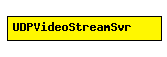

File: Applications/UDPApp/UDPVideoStreamSvr.ned
C++ definition: click here
Video stream server. To be used with UDPVideoStreamCli.
The server will wait for incoming "video streaming requests". When a request arrives, it draws a random video stream size using the videoSize parameter, and starts streaming to the client. During streaming, it will send UDP packets of size packetLen at every waitInterval, until videoSize is reached. The parameters packetLen and waitInterval can be set to constant values to create CBR traffic, or to random values (e.g. waitInterval=uniform(1e-6, 1.01e-6)) to accomodate jitter.
The server can serve several clients, and several streams per client.
See also: UDPVideoStreamCli
The following diagram shows usage relationships between modules, networks and channels. Unresolved module (and channel) types are missing from the diagram. Click here to see the full picture.
| Name | Type | Description |
|---|---|---|
| serverPort | numeric const | port to listen on |
| waitInterval | numeric | can be random, to accomodate jitter |
| packetLen | numeric | bytes; can be random |
| videoSize | numeric | bytes; can be random |
| Name | Direction | Description |
|---|---|---|
| from_udp | input | |
| to_udp | output |
simple UDPVideoStreamSvr parameters: serverPort: numeric const, // port to listen on waitInterval: numeric, // can be random, to accomodate jitter packetLen: numeric, // bytes; can be random videoSize: numeric; // bytes; can be random gates: in: from_udp; out: to_udp; endsimple